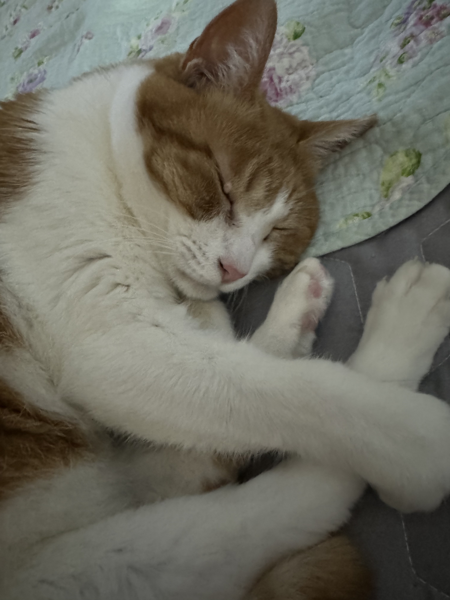
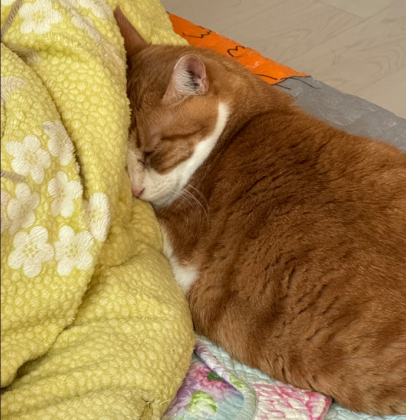
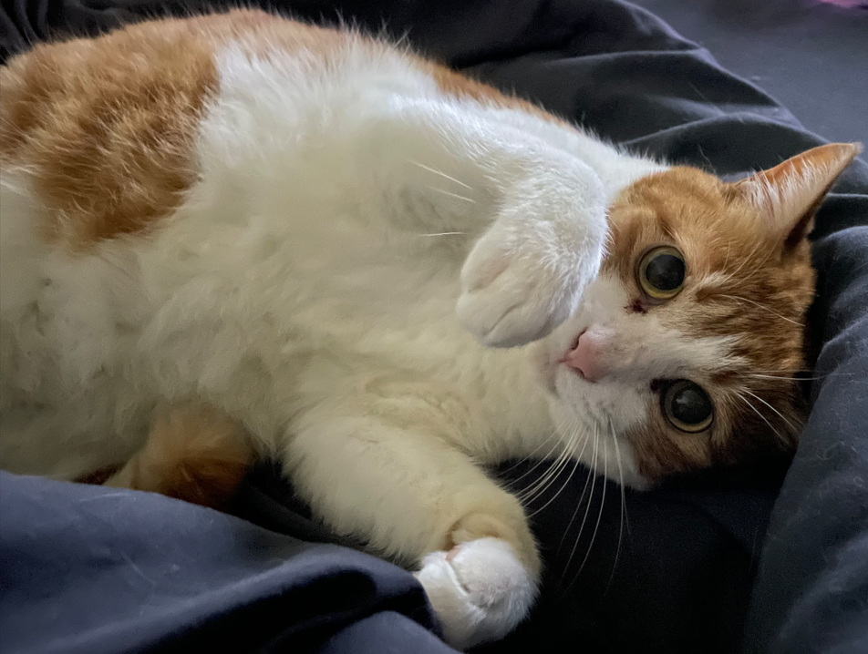

🐱 Bori
소개
이름 : 김보리
생년월일 : 2013년 4월 6일
성별 : 여아 ♀️
성격
까칠한 얼음 공주 같은 성격
불러도 잘 오지 않지만, 안기고 싶을 때는 직접 와서 꾹꾹이를 한다.
하기 싫은 건 절대 하지 않는 확실한 취향의 고양이
좋아하는 것
손장난하다가 집사 손 물어뜯기
높은 곳 올라가기
눈 가리고 낮잠 자기
집사 배 위에 올라가기
Gallery



← 홈으로 돌아가기